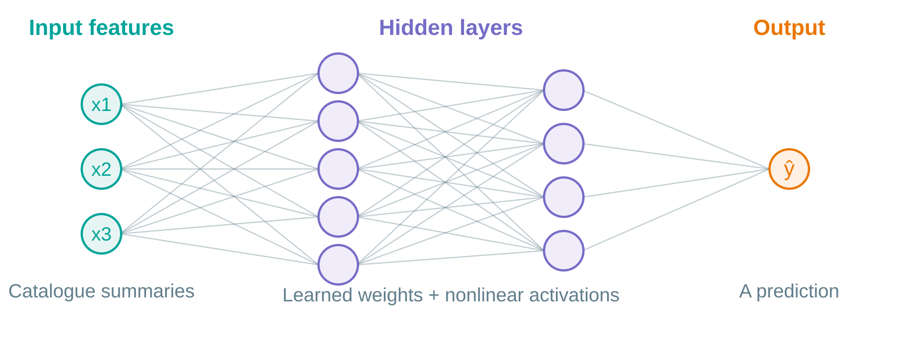
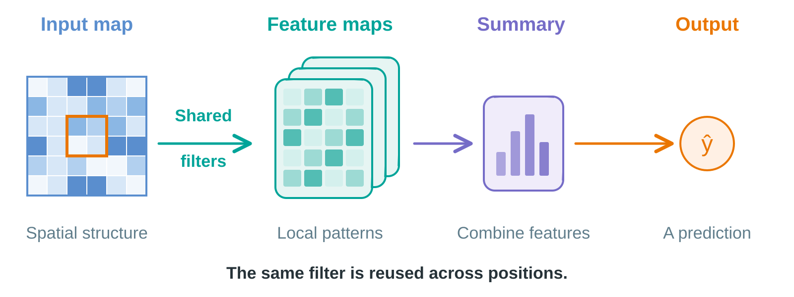
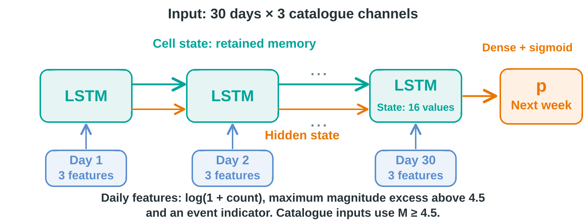
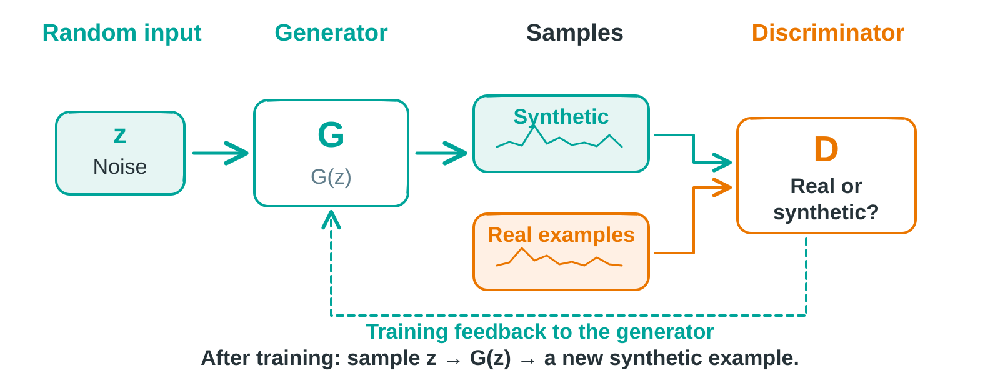
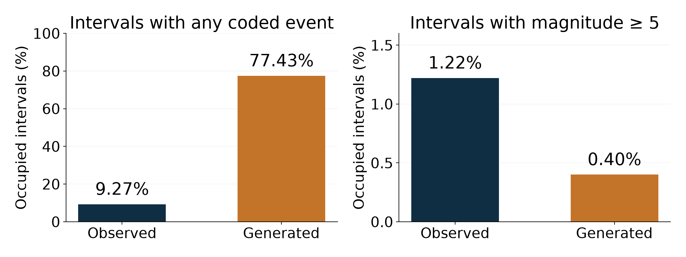
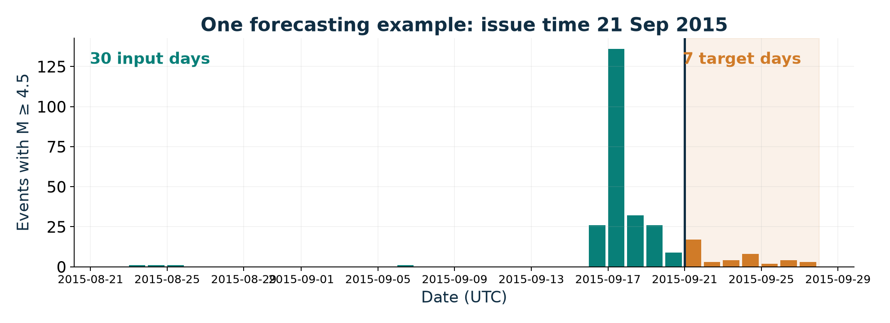
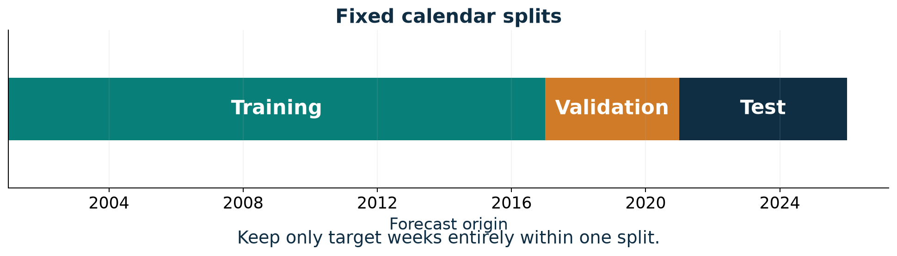
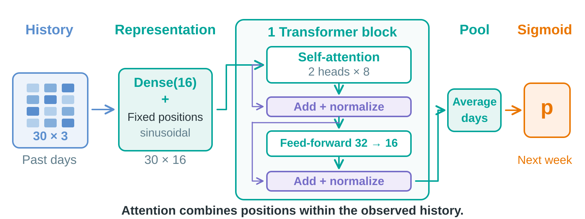
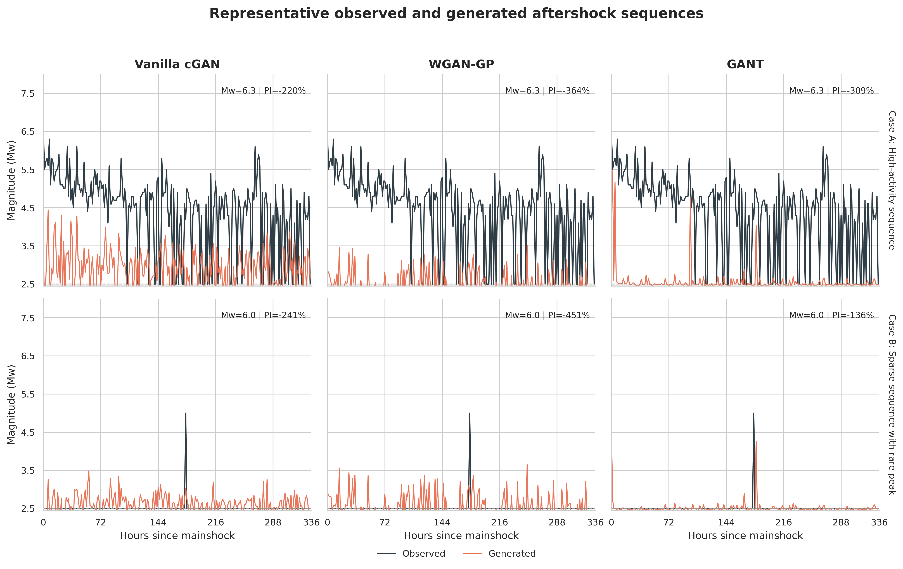

STATSEI14 · PRACTICAL TUTORIAL
Deep Learning ETAS
Practical Hybrid Workflows for Seismic Forecasting
Francisco Plaza-Vega
13 October 2026 · Chile
Learning about seismicity through representations, models and evidence.
duration_seconds: 30
The session has 25 minutes of presentation, 23 minutes of guided LSTM practice, an eight-minute Transformer comparison and four minutes of closing discussion. Deep learning is the main theme. ETAS supplies one way to bring statistical structure into a learning problem. The public title is retained. Main slides s01-s20 end at minute 25. Use d01-d03 after the LSTM notebook at minute 48 and h01 at minute 56.
What can we learn from seismicity?
Signals reveal recorded events.
Catalogues describe event histories.
Models turn histories into questions about what may follow.
What information do we represent, and what do we ask a model to learn?
Map: frozen USGS training catalogue and Natural Earth. Illustrates today’s regional setting.
duration_seconds: 90
Begin with the phenomenon and observation. Seismicity is structured in space and time, and observation is incomplete. Deep learning gives flexible function families; scientific usefulness depends on the representation, target and evaluation. Briefly define learning: weights are adjusted from examples. This prepares participants to recognize the model names on the next slide without needing their equations. Map is from today’s USGS benchmark, not the catalogue in the published case. Our route is applications, basic tools, two research cases, then a small experiment.
Deep learning addresses different seismic tasks
ConvNetQuake · 2018 Recorded waveforms
Detect events and classify their source region
RECAST · 2023 Catalogue event history
Model the timing of future occurrences
Transformers in Chile · 2025 Event features or sequences of grids
Classify events or forecast gridded activity
A useful model starts with a clearly defined question.
duration_seconds: 180
This is a small selection of applications, not an exhaustive history or a performance ranking. ConvNetQuake recognizes events in a recorded waveform; it does not forecast the next earthquake. RECAST is a neural temporal point process with a GRU, benchmarked against temporal ETAS. Its results depend on data and benchmark, and do not establish superiority over spatial ETAS. Two separate studies with Orietta Nicolis motivate the last row: Delgado et al. classify labels such as foreshock/mainshock/aftershock from event features after a clustering/labeling stage; Farfán et al. compare temporal models on daily 4 by 4 Chilean grids. Their labels omit fine epicentre and magnitude information. Classification labels must not be equated with prospective warning. After the LSTM practical we will inspect a small Transformer using the same catalogue inputs and target. This closing comparison motivates alternatives without a separate technical lecture on attention. The homework develops questions raised by that comparison. This completes the five-minute context block.
A network learns a mapping from examples
Represented data → Neural network → Defined output
Compare with a target → Compute a loss → Update weights
Architecture determines how information is combined.
Training adjusts weights to reduce the loss.
The output and the loss must match the scientific question.
duration_seconds: 60
Use one everyday learning example before terminology: a history goes in, an estimate comes out, and a loss measures the discrepancy. Backpropagation computes gradients; an optimizer uses them to update weights. Weights are learned, whereas the target and representation are modeling choices. Validation guides choices and stopping. This is the common foundation of the four examples that follow, adapted from Units 1 and 2 of my course. Avoid an additional chronological history of DL.
MLP: combine measured features

A multilayer perceptron learns nonlinear combinations of a feature vector.
Example input: recent count, magnitude summary and elapsed time. Adapted from the author’s DL course, Unit 2.
duration_seconds: 45
Follow one connection and then a hidden layer. Each layer combines weighted inputs and a nonlinear activation. Depth composes transformations. An MLP can learn from summaries but the representation must explicitly encode any temporal ordering it needs. We do not train an additional MLP today; it supplies the basic vocabulary for the other networks. English vector adaptation preserves the visual language of the original course scheme; provenance is in slides/assets/course-adapted/source-map.md.
CNN: learn local patterns with shared filters

The same filter examines different neighborhoods.
Signals and spatial fields can both carry local structure. Adapted from the author’s DL course, Unit 3.
duration_seconds: 60
Explain a local receptive field and shared weights using the diagram. CNNs also operate on time series; they are not restricted to photographs. In the published case a sequence of ETAS-derived spatial maps provides the representation. A grid choice determines what counts as a neighborhood and what information is retained. No kernel arithmetic is needed for the workshop.
LSTM: carry information through a sequence

A learned state summarizes the history for a defined output.
Same learned update across time. Adapted from the author’s DL course, Unit 4.
duration_seconds: 75
Read left to right. Each step combines the new daily input with information carried from earlier steps. Gates control what is retained, updated and exposed. We need the idea of memory, not gate equations. A many-to-one setup turns a 30-day history into one prediction, which connects to both the published temporal case and the practical. These cases have different targets. Attention is another way to combine information across positions. We will contrast it with recurrence in a compact demonstration after the LSTM practical.
Generative learning: produce new samples

A generator learns to produce samples from a learned distribution.
GAN is one approach to generative learning. Adapted from the author’s DL course, Unit 5.
duration_seconds: 60
Noise allows different generated samples. A conditional extension also supplies contextual information; that is the setup in the Isidora case. The diagram here shows a generic GAN. In a GAN a discriminator or critic supplies a training signal; the generator is trained to produce samples consistent with the observed data under that objective. Generative describes the learning task, not an architecture mutually exclusive with MLP, CNN or LSTM. We will use this vocabulary in Isidora’s case. Producing a plausible curve is not sufficient evidence of a scientifically adequate distribution. This five-minute overview of DL concepts ends at minute 10. Retain input, output, learned parameters and training loss as the shared vocabulary.
Our first case: learning from an ETAS representation
Scientific question
Can neural networks learn the evolution of a statistical representation of seismic activity?
Two views
A daily time series and a sequence of spatial maps.
Nicolis, Plaza & Salas · Spatial Statistics 42 (2021), 100442 · CSN Chile, 2000–2017
duration_seconds: 90
Introduce our published work using the original author-provided project workflow. Interpret its broad intensity/location labels precisely: the targets derive from a fitted ETAS representation, not physical shaking or an exact next epicentre. The catalogue is Chile’s National Seismological Center, unlike the USGS practical. The question is how to use a statistical model to construct representations for learning. Source https://doi.org/10.1016/j.spasta.2020.100442 . Explain that the next three slides unpack the representation and the two outputs.
ETAS supplies a statistical description of activity
\lambda(t\mid\mathcal H_t)=\mu+\sum_{t_i<t}\text{contribution from event }i
Background + magnitude-dependent contributions that decay with time
Spatial ETAS also describes how contributions vary over space.
This conditional occurrence rate becomes a representation for learning.
Conceptual sketch. Process intensity is different from magnitude and shaking intensity.
duration_seconds: 75
Use the equation as an intuitive bridge from the preceding statistical-seismology tutorial. Background and past-event contributions encode structure. A full model requires estimated parameters, units and observation assumptions. Process intensity is a conditional rate, not itself a seven-day probability. Here the fitted intensity is summarized for neural input and targets. Avoid a separate technical ETAS lecture. The four-quantity distinction remains in the appendix.
The temporal task: tomorrow’s maximum intensity
30 daily maxima → LSTM → Next-day maximum
Input and target: summaries of the ETAS-derived intensity.
Learning question: how much of its evolution can a temporal network capture?
Specify what is being predicted before interpreting a fit statistic.
Published case, Nicolis, Plaza & Salas (2021). The target is a model-derived quantity.
duration_seconds: 75
The paper uses 30 daily maximum intensity values for next-day prediction. A model-derived target is scientifically different from direct event occurrence. Reported test R-squared is approximately 0.66 at the threshold-six setting. At threshold five the ETAS comparator has lower MSE, MAE and RMSE, so no uniform neural superiority follows. The paper does not establish that ETAS estimation excluded all test information. Keep these qualifications available when discussing results. We are using the case to show how a representation makes a learning task possible, and why its construction must be included in evaluation.
The spatial task: the macrozone of the maximum
30 daily ETAS maps → CNN → Six zone probabilities
Which macrozone contains tomorrow’s maximum estimated intensity?
Changing the representation and output opens a different learning task.
Published case, Nicolis, Plaza & Salas (2021). These probabilities concern six macrozones.
duration_seconds: 75
Connect the CNN’s local patterns to spatial maps in the paper. Its class identifies the macrozone containing the next day’s maximum of the ETAS representation. This is neither the precise location of the next earthquake nor occurrence probability in today’s fixed box. The paper’s temporal and spatial branches motivate a shared principle: align representation, architecture and output. Transition: with Isidora we explored a richer output, an entire sequence following a mainshock. The published-case block ends at approximately minute 15. We now use the remaining five minutes of the research block for the Isidora case.
With Isidora: can we generate aftershock sequences?
Mainshock conditions + noise → Generator → A possible sequence
Thesis question
Can conditional generative models reproduce the temporal pattern of aftershock sequences?
Model families explored
Conditional GAN · WGAN-GP · attention-based generator
A richer output requires us to decide what a sequence actually represents.
Isidora Jara Muñoz (2025), thesis · Subsequent manuscript by Plaza-Vega, Jara, Nicolis & Salinas (2026), under review
duration_seconds: 75
Name Isidora and the thesis separately from the later manuscript. Explain conditions versus random input. WGAN-GP changes the adversarial objective and regularization; the attention variant changes how sequence positions exchange information. The thesis uses TGAN terminology and the revised manuscript uses GANT. Their evaluations and scores are separate sources. Do not turn this into three architecture tutorials or a performance contest. The question concerns conditional sample generation; ETAS-GAN is outside the empirical scope of the manuscript.
One sequence mixes absence and magnitude
Representation in the manuscript
14 days → 224 intervals of 90 minutes → maximum magnitude per occupied interval
2.5 2.5 4.1 2.5 3.4 2.5 2.5 5.0
Schematic values. Gray: absence marker. Orange: maximum magnitude in an occupied interval.
“No recorded event” and “event magnitude” are different outcomes.
duration_seconds: 60
In this representation 2.5 codes absence and is not an observed magnitude for an empty bin. A maximum discards multiplicity, so occupied bins are not total aftershock counts. The illustrated eight bins are schematic and are not empirical observations. Ask what information the representation loses. This motivates checking occupancy as well as errors of a numeric sequence.
Generated sequences distort event occupancy

Assess which properties of the observed sequences are reproduced.
2026 manuscript under review · Occupied intervals, not total events · Source-case results
duration_seconds: 75
This teaching plot adapts Table_gant_temporal_blocked_event_occupancy.csv. Overall occupancy is 9.27 percent observed versus 77.43 percent generated in this evaluation. Reported M>=5 occupancy is 1.22 versus 0.40 percent; inherited threshold code has > versus >= ambiguities, so do not reinterpret these as new inclusive-threshold results. The temporal GANT mean-baseline skill remains negative, -13.8 percent. The original PI denominator refers to a mean reference, not last-value persistence. Do not merge thesis metrics, illustrative sequences and blocked results. These findings concern the studied representation and evaluation; they do not establish that all generative approaches fail. The original sequence graphic is in the appendix for discussion.
The article revisits what the model should learn
Empirical reformulation
Aggregate targets: occurrence, exceedance and count summaries.
The classification branch uses tree models.
A future neural formulation
Occurrence probability, followed by magnitude conditional on occurrence.
Evaluate both parts and their joint behavior.
Reformulating the target can matter as much as changing the architecture.
ETAS-informed generation remains future work. The two-part neural model is a proposal.
duration_seconds: 75
The revised manuscript examines aggregate targets with Random Forest and Gradient Boosting. Do not attribute their classification results to GANs or LSTMs. Ranking performance depends on temporal and geographic evaluation, and is not equivalent to a calibrated operational warning. Explain how the findings motivate future separation of occurrence and magnitude without claiming that this neural model has been validated. Some inherited target horizons were not fully purged, another reason to use a carefully bounded new teaching task. We now carry these modeling lessons into the practical, not the source paper’s scores. End the research block at minute 20. Five minutes remain to frame the practical task and its evaluation.
The practical puts the same decisions in your hands
Spatial Statistics ETAS time series and maps
Intensity maximum and its macrozone
Isidora / manuscript Mainshock conditions; binned sequences
Conditional sequences; aggregate targets
Today Daily catalogue channels
Weekly occurrence probability
Represent the history → define the output → learn → check the evidence.
duration_seconds: 60
This is the explicit bridge. Today’s notebook does not reproduce either study. It isolates one tractable question, occurrence, and lets participants change the representation through an extra channel. The common scientific decisions connect the cases even though the targets and catalogues differ. Flexibility means being able to formulate and compare alternatives; it does not guarantee gains.
Today’s target: at least one event next week

30 past days → probability of at least one catalogue M ≥ 5 event in seven days.
Region: 28–34°S, 69–74°W · Input: catalogue M ≥ 4.5 · Monday forecast origins
duration_seconds: 75
Daily channels are log count, maximum excess magnitude and occupancy. Event presence distinguishes an empty day from an event exactly at the input threshold. Inputs are examples by days by features. Magnitude scales in ComCat are mixed; do not call all observations Mw. The practical predicts a defined recorded occurrence, not its exact location, shaking or damage. The threshold is a teaching policy, not proof of uniform completeness.
Evaluate using the temporal order of the problem

Compare probabilities with simple references using Brier score, log loss and calibration.
Train 2001–2016 · Validation 2017–2020 · Test 2021–2025 · Frozen, revised USGS catalogue
duration_seconds: 75
Use training to fit weights and scaling, validation for stopping and choices, and a fixed test comparison. Inputs can extend into a previous partition; target weeks cannot cross a boundary. Today’s revised ComCat data do not reconstruct original historical availability, so this is a revised retrospective experiment. Event time and information availability are separate issues. Baselines are training frequency and logistic regression. Calibration and sample size will be inspected in the notebook; a sigmoid alone does not imply calibration.
Experiment: does an informed representation help?
Catalogue channels → LSTM → occurrence probability
Catalogue channels + activity score → LSTM → occurrence probability
Before fitting: predict what the extra information might change.
After fitting: compare errors, calibration and simple baselines.
The score emphasizes larger, recent events with an illustrative decay.
Colab: practical page · Prepared results available · Transformer comparison follows the LSTM practice
duration_seconds: 90
Move to the notebook at minute 25. This is an ETAS-inspired score, not a fitted ETAS rate: no background or spatial kernel is estimated. Both LSTM variants use the same 30-day history. Adding a channel increases some input weights, which qualifies the comparison. The question concerns representation under a fixed protocol. Use minutes 25–28 for setup, 28–32 for windows, 32–38 for baselines and LSTM, 38–43 for the activity-score exercise, and 43–48 for evaluation. Use prepared results after three minutes of setup trouble or a fit exceeding its three-minute allowance. At minute 48 return to d01 and the Transformer notebook demonstration. All twenty main-slide durations sum to 1500 seconds.
A Transformer combines the same history differently

Same history and target. A different way to combine information across days.
Catalogue-only comparison · 2,305 trainable parameters versus 1,297 for LSTM · One fixed, small configuration
duration_seconds: 120
Return from the LSTM practical at minute 48. First recall the recurrent state. Here every observed day is projected to 16 features and given a fixed sinusoidal position encoding. Two attention heads, each with key dimension eight, combine information across the past window. Residual additions and layer normalization surround attention and the 32-to-16 feed-forward sublayer. Global average pooling and a sigmoid give the same next-week probability. Keep the explanation intuitive and point to the notebook model summary, without query/key/value algebra. All 30 inputs precede the forecast origin, so attention between those observed positions does not access the future target. The diagram omits no layer type but simplifies the detailed operations. This is a catalogue-only comparison: the Transformer does not receive the extra ETAS-inspired score. Parameter counts exclude optimizer state. The models have different capacity, so this is a bounded comparison under a fixed protocol, not a parameter-matched architecture contest. Proceed to results at minute 50.
The Transformer did not improve this comparison
Training frequency
0.187690
0.165370
0.513204
Logistic regression
0.186611
0.164229 0.510317
LSTM
0.183065 0.165413
0.512942
Compact Transformer
0.188771
0.166367
0.515602
Lower is better. LSTM has the lowest validation Brier; logistic regression has the lowest test losses.
Changing the architecture gave us a useful comparison, without a gain in this pilot.
Pilot: 7 October 2026 · Neural scores are means over seeds 7, 17 and 27 · Catalogue-only comparison on the same split · Exploratory results on an already-inspected test period
duration_seconds: 240
Use minutes 50–54 to open the Transformer notebook, inspect its model summary and load or run the compact comparison. Explain that the displayed neural scores are arithmetic means across three seeds, while the two deterministic baselines have one result. Both neural models receive the identical 30-by-3 tensor. Logistic regression uses the means, maxima and last values of those channels, while the frequency baseline uses the training target prevalence. Show the individual-seed figure or table from the prepared notebook before returning here. The three Transformer test Brier values are 0.165821, 0.167079 and 0.166200; the paired LSTM values are 0.165309, 0.165626 and 0.165304. Logistic regression has the lowest observed test Brier and log loss, whereas LSTM has the lowest validation Brier. These are descriptive differences from one frozen regional split, with 208 validation and 260 test origins, not a significance test or a claim about all Transformers. All predeclared candidates were retained without selecting a seed using test results. The original tutorial test had already been inspected before the pilot, so this is exploratory evidence. Local CPU fitting took about 1.34–1.59 seconds for Transformer and 2.00–2.05 seconds for LSTM, but early stopping used 5–9 versus 20 epochs. These fit timings do not rank architecture speed and exclude notebook setup. Source: experiments/transformer-pilot-2026-10-07/results/metrics.csv and fits.csv. The public companion assets preserve per-seed metrics. If live execution stalls, use the prepared results immediately and keep the explanation within four minutes. Do not tune against the displayed test table.
What can this result tell us about the problem?
Observed in this pilot
The attention model did not improve the measured losses.
A simple baseline remained competitive.
Questions for the next experiment
Which representation and target preserve useful structure?
What information is available in the catalogue?
Would more data, capacity or a different training budget change the result?
Useful deep learning depends on how we represent the phenomenon and formulate the task.
These questions are hypotheses to investigate. The pilot does not identify the cause of its performance.
duration_seconds: 120
Use minutes 54–56 to connect the result to the research cases. In Spatial Statistics, a fitted statistical representation supplied the targets and inputs. In the Isidora work, separating absence, magnitude and aggregate outcomes changed the scientific question. Here changing the architecture alone did not improve losses. The pilot cannot diagnose whether the representation, target, available information, sample size, optimization budget or model capacity caused the result. In particular, it does not establish that seismicity is too complex for deep learning or that attention is unsuitable for earthquake modeling. Ask participants for one testable hypothesis and the comparison needed to investigate it. Keep any extension conditional on preregistering choices and obtaining an appropriate new evaluation, because the current test scores are already known.
What did we learn, and what would we test next?
Which properties of the catalogue did our representation preserve?
What evidence supports changing an input or an architecture?
What would we evaluate next before making a broader claim?
Deep learning offers flexible tools. Their scientific value depends on the question and the evidence.
duration_seconds: 240
Close at minutes 56–60. Invite two brief interpretations, then identify what the representation comparison and architecture comparison each tested. Distinguish an observed score from an explanation of that score. The compact Transformer demonstration is complete; homework deepens a reading or extends one predeclared modeling choice. Participants with less Python experience can use the guided reading and prepared comparisons. Experienced participants can propose a controlled experiment, document its target and evaluation, and retain simple baselines. The website specifies deliverables and treats comparisons on the already-inspected test as exploratory. Return to the common message: deep learning supplies flexible tools for approaching seismic phenomena, and usefulness depends on how we formulate the task and assess the evidence. The 25-minute talk, 23-minute notebook, eight-minute comparison and four-minute closing total 60 minutes.
Appendix · a small Keras model
= keras.Sequential([= (30 , n_features)),16 ),1 , activation= "sigmoid" )compile (optimizer= "adam" , loss= "binary_crossentropy" )= model.fit(X_train, y_train,= (X_val, y_val),= 20 , batch_size= 64 )
Sequential defines · compile configures · fit learns · predict applies
Reference for the practical. Runnable notebook adds explicit seed, early stopping, learning rate and shuffle settings. Validation selects stopping rather than updating weights through gradients. https://keras.io/api/layers/recurrent_layers/lstm/ .
Appendix · quantities and scientific meaning
Process intensity At what conditional rate do events occur?
Magnitude How large is an event?
Shaking intensity What motion or effects occur at a location?
Risk What consequences may occur given exposure and vulnerability?
Today’s output is a probability of a defined occurrence event.
The published title and original workflow labels require this distinction. ETAS intensity is an event rate. A probability for an interval needs a predictive calculation, not relabeling a rate. None of today’s probability scores is a shaking or damage estimate.
Appendix · the exact activity score
r_t(s)=\sum_{t-L\le t_i<s}10^{\alpha(M_i-M_0)}
\left(1+\frac{s-t_i}{c}\right)^{-p},\quad s\le t.
Illustrative: α=1, c=1 day, p=1.1, L=30 days.
Shared history: the same available interval for both LSTMs.
Representation: log1p(score) is an additional daily channel.
This index is neither an estimated ETAS rate nor a probability.
The history is truncated separately at each origin and the daily endpoint includes only strictly earlier events. A fitted ETAS extension needs a documented estimation sample, units, observation model and forecast construction. For the optional 14-day task, both variants use L=14. The binary target is at least one catalogue event M>=5 in [t,t+7 days).
Appendix · original generative examples

2026 manuscript under review · Original PI annotations use a mean-reference denominator · Illustrative cases
Use only if discussion requires the original sequence examples. These panels are not the blocked-evaluation occupancy comparison. The absence marker is 2.5; occupied-bin maxima discard multiplicity. Original PI is a mean-baseline measure rather than last-observation persistence. Do not merge illustrative case values with the aggregate temporal evaluation or thesis results.
Appendix · evidence and availability
Chronological, purged targets
Future target intervals do not cross partitions.
Training-only normalization
Later inputs do not set scaling parameters.
Frozen revised catalogue
Data bytes and provenance are reproducible.
Historical catalogue vintages
Not reconstructed.
Reproducibility and historical information availability are separate requirements.
Magnitude, location and inclusion may have changed after an event. The updated field is not first publication and cannot reconstruct original versions or label-adjudication delays. Dependent weeks, one regional split and a small number of seeds limit generalization. The original activity-score reference run uses one seed; the Transformer pilot repeats catalogue-only models at three seeds. The reference run shows only a small LSTM change from the added score and lower test Brier for logistic regression. A source or architecture’s reported score should not be transferred to a different target.
Appendix · sources and further reading
Context papers are distinct tasks, not a ranking of architectures. The 2026 manuscript status is under review, confirmed by the author. Original course diagram sources and any inherited attribution are preserved in slides/assets/course-adapted/source-map.md. Full private theses and manuscripts are excluded from distribution. Foundational DL and data/software references remain on the references page.